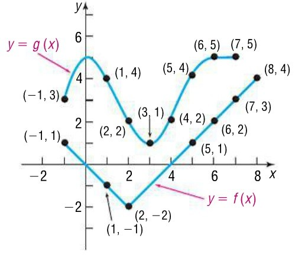

Composite Functions
Function Composition
Definition
Let \(f\) and \(g\) be functions. We define the composition of \(f\) and \(g\) as:
\[(f\circ g)(x)=f(g(x))\]
The composition \((f \circ g)(x)=f(g(x))\) means we input the output of one function into another. This is best observed through examples and visual representations showing how the two functions interact.
Example 1
Draw mapping diagrams for \(f\) and \(g\), then determine \((f \circ g)(x)\).
Use this space for mapping diagrams and evaluation.
Example 2
Use the tables below to evaluate compositions.
| \(x\) | \(-1\) | \(0\) | \(1\) | \(2\) | \(3\) | \(4\) |
|---|---|---|---|---|---|---|
| \(f(x)\) | \(0\) | \(-1\) | \(7\) | \(-1\) | \(2\) | \(0\) |
| \(x\) | \(-1\) | \(0\) | \(1\) | \(2\) | \(3\) | \(4\) |
|---|---|---|---|---|---|---|
| \(g(x)\) | \(-5\) | \(-1\) | \(0\) | \(1\) | \(4\) | \(5\) |
-
\((g\circ f)(0)=g(f(\,\phantom{0}\,))=\)
-
\((f\circ g)(2)=\)
-
\((g\circ g)(1)=\)
-
\((f\circ g)(4)=\)
Example 3
Use the graphs of \(f\) and \(g\) to answer composition questions.

Accessible description of the graph
-
\((g\circ f)(-1)=\)
-
\((f\circ g)(5)=\)
-
\((f\circ f)(1)=\)
-
\((g\circ g)(5)=\)
How Algebraic Composition Works
If \(f(x)=2x+3\), then:
-
\(f(2)=\)
-
\(f(p)=\)
-
\(f(g(x))=\)
Example 4
Let \(f(x) = 5x^2+5\) and \(g(x)=3x\) be given. Find \(f(g(x))\) and \(g(f(x))\). Are these two compositions equal?
Example 5
Let \(f(x) = 6x-3\) and \(g(x)=\dfrac{x+3}{6}\). Find the following compositions:
-
\(f(g(x))=\)
-
Find the value for \(f(g(2))=\)
-
\(g(f(x))=\)
Example 6
The regular price of a computer is \(x\) dollars. Let \(f(x)=x-400\) and \(g(x)=0.75x\). Using these two functions, complete the parts below. (Hint: \(0.75x\) is a reduction of \(1x-0.25x\) which may help with understanding this function.)
-
Describe what \(f\) and \(g\) model in terms of price of a computer.
-
Find \(f(g(x))\) and describe what this models in terms of a computer's price.
-
Find \(g(f(x))\) and describe what this models in terms of a computer's price.
-
Which composition gives the greater discount?